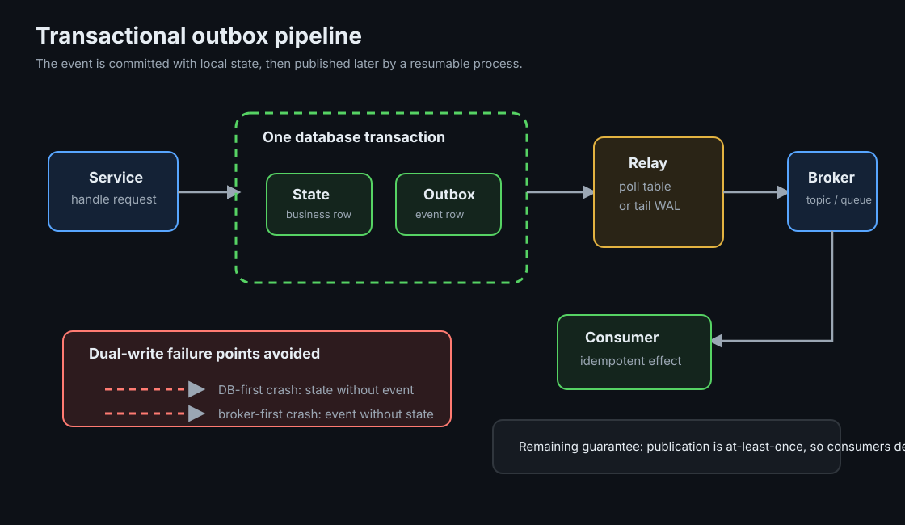

The Transactional Outbox
When one service must update its database and publish an event, the outbox pattern makes the event part of the same database transaction and publishes it later from committed data.
TLDR
- Dual writes have a gap: if the database commit and event publish are separate operations, a crash between them can leave state without an event or an event without state.
- The outbox stores the event first: write the business row and the outbox row in one database transaction.
- A publisher carries committed rows out: polling or CDC reads the outbox and publishes to the broker.
- Consumers still need idempotency: outbox publishing is normally at-least-once, so duplicate events remain possible.
Mental Model
Instead of "save state, then publish event", use "save state and save the event record together". A separate resumable process reads committed event records and sends them to the message broker. If that process stops, it resumes from its stored position. The business transaction is still local to one database, which is the part that makes the pattern practical.

Ground-Up Explanation
Why reordering does not fix dual writes
If the database write happens first, a crash before publish leaves committed state with no event. If publish happens first, a crash before the database commit leaves an event for state that does not exist. Retrying helps only when the retry knows both operations still need to happen. Once one operation succeeded and the other did not, a normal idempotent retry can skip the successful side and miss the failed side.
Why the outbox works
The outbox changes the problem from two systems to one local transaction. The service writes the business change and an event record to the same database. If the transaction commits, both records exist. If it rolls back, neither exists. Publishing is moved out of the request path and can be retried independently.
Polling and CDC
A polling publisher queries unpublished outbox rows, publishes them, and marks them sent. It is simple and portable, but it adds database load and usually has higher latency. A CDC publisher reads the database change log, such as PostgreSQL WAL through logical decoding, and publishes committed outbox inserts. CDC usually gives lower latency and less query load, but it adds connector operations, replication slot monitoring, and schema-management concerns.
Concept Deep Dive
Pattern family
| Pattern | How it works | Trade-off |
|---|---|---|
| Dual write | Write local state and publish to broker as separate operations. | Simple, but no retry order removes the crash gap. |
| Transactional outbox | Write state and outbox event in one local transaction. | Good default when a service owns a database and publishes events. |
| Polling publisher | Application job polls unsent outbox rows and marks progress. | Easier to run, with more database queries and polling delay. |
| CDC publisher | Connector reads committed outbox changes from the database log. | Lower request-path load, with more infrastructure to operate. |
| Listen to yourself | Service updates its read model by consuming its own published events. | Useful for event-driven state, but adds latency and replay complexity. |
| CDC-only events | Derive events directly from table changes without an explicit outbox table. | Less application code, but couples event contracts to storage schema. |
| Event sourcing | Events are the source of truth and state is derived from them. | A different architecture, not just an outbox implementation detail. |
When not to use an outbox
An outbox is not needed when there is no cross-system publish, when a single datastore already contains the full workflow, or when the user-facing action cannot tolerate eventual publication. It also does not replace a transaction when two synchronous writes must both be visible before the request returns. In those cases, change the workflow boundary or choose a system that provides the required atomicity.
Outbox lifecycle
The outbox table is a production data structure. It needs retention, indexes for publisher access, a schema treated as a public contract, and a plan for retries. Common trimming strategies include deleting rows after confirmed publication, archiving published rows, or relying on CDC to read insert records and deleting rows quickly afterward. The right choice depends on audit needs and replay policy.
At-least-once is still present
The outbox solves atomicity between local state and event creation. It does not give exactly-once delivery to consumers. A publisher can send an event and fail before recording progress, or a connector can re-emit after restart. Consumers should use the idempotent-consumer pattern described in the delivery semantics page.
Implementation Details
- Use a stable event id: consumers need a unique id that survives retries and replay.
- Use the aggregate id as the message key when ordering matters: related events land on the same partition and preserve per-aggregate order.
- Keep payload schema deliberate: outbox rows become external contracts once other services consume them.
- Monitor publisher lag: polling backlog or replication slot lag means committed business state is not yet visible as events.
- Separate publish retries from business retries: the request path should not need to redo the business write just because broker publish was delayed.
Lab Evidence
The runnable lab is labs/kafka/outbox: Postgres with logical WAL, Kafka, Debezium Connect, and a Go writer that hard-crashes after committing order 500 and before publishing its event. The audit is set arithmetic: every order_ref in Postgres must appear in the event topic.
make break
Dual write + crash + idempotent restart. Audit finds order 500 has no event; exit 1.
make test
Outbox + identical crash. Debezium drains the outbox; audit matches every order; exit 0.
make outbox-rows / status
Inspect the outbox table and the connector's streaming state directly.
Measured: the same crash, with and without the outbox
make break (dual write):
CRASH injected after committing ord-500, before publishing its event
audit(direct): orders in postgres=1000, events in order-events=999
orders with no event: 1 [ord-500] => exit 1
make test (outbox):
CRASH injected after committing ord-500
audit(cdc): orders in postgres=1000, events in shop.public.outbox=1000
orders with no event: 0 => exit 0Real runs from 2026-07-07. The restarted dual-write run finished the remaining orders but did not recover ord-500's event because the idempotent retry skipped the already committed order. The outbox run used the same crash point and produced one event for every order.
Production Notes
- Monitor replication slot lag with
pg_replication_slots; a stalled connector can retain WAL and fill disk. - Schema-change discipline applies to the outbox table. Consumers parse the payload, so compatibility rules matter.
- Initial snapshots need a decision: should consumers receive existing outbox rows, only new rows, or a controlled backfill?
- Use schema registry formats such as Avro or Protobuf when event contracts become shared across teams.
Code Pointers
| Code | Why it matters |
|---|---|
cmd/outbox/main.go | dualwrite vs outbox differ by a small transaction change; the crash lands in the same place in both. |
scripts/connector.json | The Debezium configuration for reading the outbox table from PostgreSQL. |
migrations/001_outbox.sql | The outbox table and its event contract fields. |
Further Reading & Watching
- Pattern: Transactional outbox by Chris Richardson. Concise description of the pattern and its forces.
- Reliable Microservices Data Exchange With the Outbox Pattern by Gunnar Morling, Debezium.
- Using logs to build a solid data infrastructure (or: why dual writes are a bad idea) by Martin Kleppmann.
- Revisiting the Outbox Pattern by Gunnar Morling, 2023, with trade-offs and alternatives.
- Debezium docs: PostgreSQL connector and Outbox Event Router.
- PostgreSQL docs: Logical Decoding, what a replication slot provides.
- Book: Martin Kleppmann, Designing Data-Intensive Applications, ch. 11, change data capture and event sourcing.